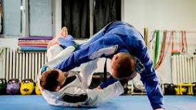

é uma arte marcial que tem por objetivo conquistar posições de controle sob o adversário até o xeque-mate, a finalização, seja por torção ou estrangulamento.
Uma das teorias sobre sua origem é que o Jiu-Jitsu surgiu na Índia através de monges budistas. Outra vertente é que teria sido criada na China, entre os séculos III e IV e, em seguida, chegado ao Japão através da expansão do budismo.
Os golpes de Jiu Jitsu frequentes envolvem as articulações, estrangulamentos, imobilizações, torções e alavancas. Os golpes válidos são aqueles que procuram neutralizar, imobilizar, estrangular, pressionar, torcer articulações e lançar o